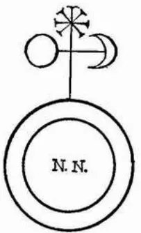

Ritual Grimoire
Cabalistic Planetary Love Talisman
Tradition
Solitary or Group
Setting
Category
Difficulty
Discreet
Correspondences1
Entities4
Moon Phase2
Plants1
Timing1
A Kabbalistic love talisman invoking the intelligences of Mercury, the Moon, and Earth (invoked under Saturn) through their angelic and demonic names, prepared outdoors under a clear waxing moon and carried in the left shoe of the beneficiary until the desired person seeks them out.
Quantities
Clean talisman paper
Pen and ink of art
1 lamp of art (lit)
Cup of water
Salt
Rosemary
Thurible with amatory incense
Directions
- Select a clear night when the moon is waxing and shining brightly. Ensure you are alone or with trusted fellow practitioners.
- Place the talisman paper in the altar triangle. Draw the Melchidael diagram on the paper with pen and ink of art. Pass it through water and fire, naming it with the name of the person to be influenced. On the reverse side, write: Melchidael Baresches.
- If outdoors is possible, take the ritual outside at this point. If not, complete the altar work indoors, then carry the paper outside for the invocation.
- Outdoors: locate the moon, then identify the brightest star closest to it. Place the talisman on bare earth or grass. Cover it with your right foot. Bend your left knee to the ground. Take your workbook in your left hand and your lit lamp of art in your right. Fix your gaze on the moon and star, then pronounce the following three times:
I salute and conjure you, O beautiful Moon, O beautiful Star, O bright Light which I hold in my hand! By the air which I breathe, by the breath which is within me, by the earth which I touch, I conjure you. And by the names of the spirits who are princes residing in you; by the ineffable name On, which hath created All; by thee, O resplendent Angel Gabriel, together with the princes of Mercury and Earth, Michael and Melchidael!
I conjure you again by all the divine names of God, that you send down to obsess, torment, and harass the body, spirit, soul, and five senses of the nature of [name of intended], that they come to [name of beneficiary] at [time] and do accomplish their will, having no friendship for anyone in the world especially for [name of beneficiary]. So long as they shall be indifferent to [beneficiary], so shall they be obsessed, so suffer, so be tormented. Go then promptly; go Gabriel, Michael, Melchidael, Baresches, Zazel, Tiriel, Malcha, and all those who are with you. I conjure you by the great living God to accomplish my will, and I [witch's name] do promise to satisfy you duly! - Having repeated the incantation three times, cast amatory incense on the thurible coals. Rise from the kneeling position and stand the lamp of art on the talisman paper. Leave it to burn down and extinguish itself.
- The following day, give the talisman to the person who requested it. They should carry it in their left shoe or otherwise on their person until the intended person seeks them out.
Note on the names: Gabriel = angel of the Moon. Michael = angel of Mercury. Melchidael = angel of Earth (invoked under Saturn's aegis in this sevenfold scheme). Tiriel = intelligence of Mercury. Malcha (Malcha Be Tarshishim) = intelligence of the Moon. Zazel = spirit of Saturn, here doubling for Earth. Baresches = likely a detached fragment of Malcha's full Hebrew name, now operating as a separate entity. When uttering the invocations: at the star, summon the Mercury symbolism; at the moon, concentrate on Habondia and her images; for the Earth power, envision all growing things, ancient forests, peat, loam, caves, gardens at night, and all horned and hoofed creatures.
